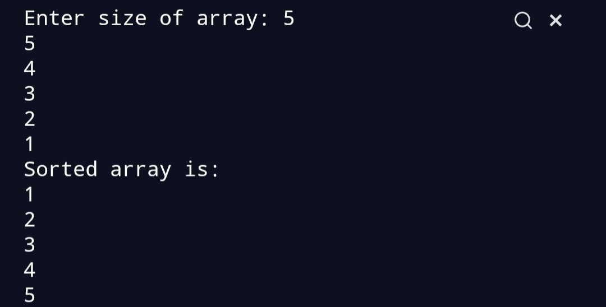

Bubble Sort Algorithm.
To write a program for Bubble sort.
To get a understanding about Bubble sort.
Start with the first element, compare the current element with the next element of the array. If the current element is greater than the next element of the array, swap both of them. If the current element is less than the next element, move to the next element. Keep on comparing the current element with all the elements in the array. The largest element of the array comes to its original position after 1st iteration. Repeat all the steps till the array is sorted.
Consider an array a=[5,4,3,2,1]
Iteration 1:-
|5|4|3|2|1|
|___________5>4 therefore we swap both of them.
|4|5|3|2|1|
|_________5>3 therefore we swap both.
|4|3|5|2|1|
|_______5>2 therefore we swap.
|4|3|2|5|1|
|_____5>1 therefore we swap.
|4|3|2|1|5| Now 5 is placed at its original position
Iteration 2:-
|4|3|2|1|5|
|__________4>3 therefore we swap both.
|3|4|2|1|5|
|________4>2 therefore we swap both.
|3|2|4|1|5|
|______4>1 therefore we swap both.
|3|2|1|4|5|
|__ 4 is placed at its original position.
Iteration 3:-
|3|2|1|4|5|
|_________3>2 we swap.
|2|3|1|4|5|
|_______3>1 we swap.
|2|1|3|4|5|- 3 is placed at original position.
Iteration 4:-
|2|1|3|4|5|
|_________2>1 we swap.
|1|2|3|4|5| the array is sorted.
Just clone the repository .
